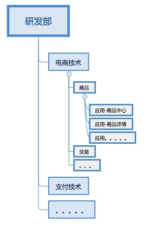
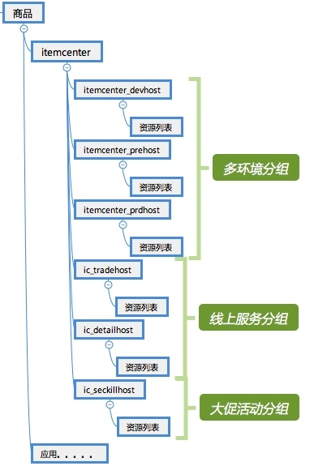
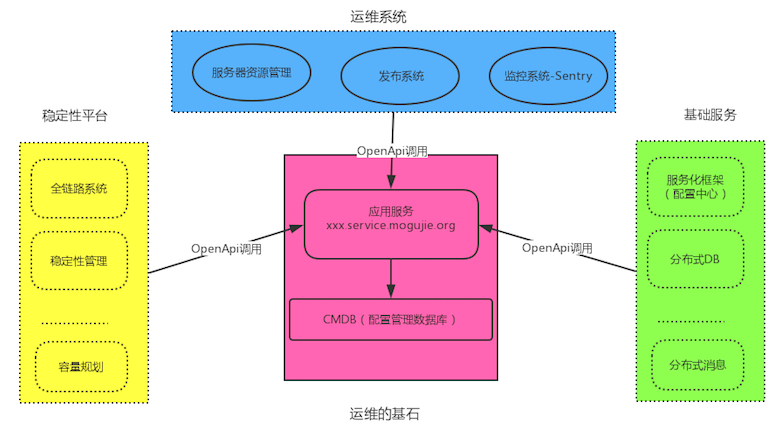
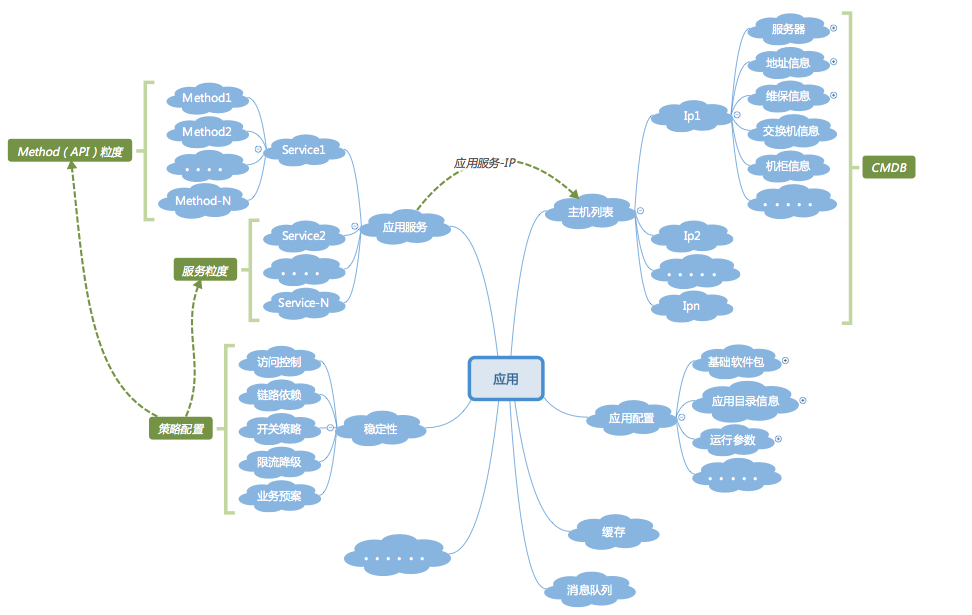

- 00 开篇词 带给你不一样的运维思考.md
- 01 为什么Netflix没有运维岗位？.md
- 02 微服务架构时代，运维体系建设为什么要以应用为核心？.md
- 03 标准化体系建设（上）：如何建立应用标准化体系和模型？.md
- 04 标准化体系建设（下）：如何建立基础架构标准化及服务化体系？.md
- 05 如何从生命周期的视角看待应用运维体系建设？.md
- 06 聊聊CMDB的前世今生.md
- 07 有了CMDB，为什么还需要应用配置管理？.md
- 08 如何在CMDB中落地应用的概念？.md
- 09 如何打造运维组织架构？.md
- 10 谷歌SRE运维模式解读.md
- 11 从谷歌CRE谈起，运维如何培养服务意识？.md
- 12 持续交付知易行难，想做成这事你要理解这几个关键点.md
- 13 持续交付的第一关键点：配置管理.md
- 14 如何做好持续交付中的多环境配置管理？.md
- 15 开发和测试争抢环境？是时候进行多环境建设了.md
- 16 线上环境建设，要扛得住真刀真枪的考验.md
- 17 人多力量大vs.两个披萨原则，聊聊持续交付中的流水线模式.md
- 18 持续交付流水线软件构建难吗？有哪些关键问题？.md
- 19 持续交付中流水线构建完成后就大功告成了吗？别忘了质量保障.md
- 20 做持续交付概念重要还是场景重要？看笨办法如何找到最佳方案.md
- 21 极端业务场景下，我们应该如何做好稳定性保障？.md
- 22 稳定性实践：容量规划之业务场景分析.md
- 23 稳定性实践：容量规划之压测系统建设.md
- 24 稳定性实践：限流降级.md
- 25 稳定性实践：开关和预案.md
- 26 稳定性实践：全链路跟踪系统，技术运营能力的体现.md
- 27 故障管理：谈谈我对故障的理解.md
- 28 故障管理：故障定级和定责.md
- 29 故障管理：鼓励做事，而不是处罚错误.md
- 30 故障管理：故障应急和故障复盘.md
- 31 唇亡齿寒，运维与安全.md
- 32 为什么蘑菇街会选择上云？是被动选择还是主动出击？.md
- 33 为什么混合云是未来云计算的主流形态？.md
- 35 以绝对优势立足：从CDN和云存储来聊聊云生态的崛起.md
- 36 量体裁衣方得最优解：聊聊页面静态化架构和二级CDN建设.md
- 37 云计算时代，我们所说的弹性伸缩，弹的到底是什么？.md
- 38 我是如何走上运维岗位的？.md
- 39 云计算和AI时代，运维应该如何做好转型？.md
- 40 运维需要懂产品和运营吗？.md
- 41 冷静下来想想，员工离职这事真能防得住吗？.md
- 42 树立个人品牌意识：从背景调查谈谈职业口碑的重要性.md
- 划重点：赵成的运维体系管理课精华（一）.md
- 划重点：赵成的运维体系管理课精华（三）.md
- 划重点：赵成的运维体系管理课精华（二）.md
- 新书 《进化：运维技术变革与实践探索》.md
- 特别放送 我的2019：收获，静静等待.md
- 结束语 学习的过程，多些耐心和脚踏实地.md
08 如何在CMDB中落地应用的概念？
我们前面讲了应用是整个微服务架构体系下运维的核心，而CMDB又是整个运维平台的基石。今天我就讲讲在CMDB中如何落地应用这个核心概念，以及如何建立应用集群分组的思路。
如何有效组织和管理应用
微服务架构下会有很多应用产生出来，少则十几、几十个，多则上百甚至上千个。这时我们面临的第一个问题就是如何有效地组织和管理这些应用，而不是让它们在各处散乱，命名方式和层次结构可能还不统一。
你可能接触过“服务树”的概念，这个提法是小米在早期互联网运维实践的分享中传播出来的。我第一次听到这个概念是在13年阿里技术嘉年华大会上听小米运维的分享。再往前，这个概念应该是从百度的运维体系中借鉴出来的。
这里的服务实际对应的就是我们前面提到的应用这个概念。据我了解，在阿里和腾讯都是叫作应用，现在业界比较通用的叫法也是应用。其实叫什么并不重要，关键还是要学习到对这个概念的管理方式。
从服务树这个名字中，我们就可以了解到，有效组织和管理应用的方式，就是把它组织成一个树形的层次结构。这种管理模式，无论是在BAT，还是在其它的互联网公司，基本都是一样的思路和模式，所以叫法虽然不同，但是思路上却是相通的，可谓异曲同工。
基于业务维度的拆分，对应产生了我们的应用拆分原则。比如对于电商公司，大的维度会有电商、支付、广告、流量和搜索等业务领域；进一步，电商业务领域里最典型的会有用户、会员、商品、交易、商家、店铺以及物流等；这里面还可以再进一步细分，比如商品会有详情、SKU、SPU、库存、评价、标签等。
讲到这里，我们再看一下技术团队的组织架构，基本上是对应着整个业务技术架构的拆分的。也就是业务架构决定了技术架构，而技术架构又决定了一个研发团队的组织架构，这个组织架构中不同的团队单元分别承担着对应业务的需求开发和实现职责。
上面这个组织架构建设的逻辑和思路，也是我们在组建团队和职责划分时可以参考的。
这样一个逻辑讲下来，我们的应用管理思路其实也就明晰了：产品线-业务团队-应用。
这里举个电商商品的例子就是：电商技术-商品团队-商品中心-商品详情等。

当然因为每个公司对组织架构定义的方式不同，也可以用一、二级部门这样的方式来指代。但是具体团队的分工和职责，一定是来自于业务架构决定的技术架构，只有这样，各业务团队才会职责清晰，配合协作才会顺畅起来。
对于应用名定义，要设定规范，比如：
- 应用名必须以大小写英文字母以及下划线组合；
- 应用名长度不超过40个字符，尽量简单易懂；
- 不允许出现机房代号和主机名称这样的信息。
简单举例，商品中心命名为itemcenter，商品详情命名为detail。
这里做个小结：到了软件运维阶段，运维工作是否可以高效地组织开展，很大程度上，在前面的业务架构拆分阶段就决定了。也就是业务架构拆分得是否合理、职责是否明晰，决定了后续团队组织架构是否合理、团队职责是否明晰。如果这点没做好，到了运维阶段必然就是混乱的。
这一点我在开篇词中也提到过，运维能力的体现，一定是整体技术架构能力的体现，割裂两者单独去看，都是没有意义的。同时，对于当前仍然把运维割裂建设的研发团队，也需要去思考一下在组织架构建设上的合理性了。
应用的集群服务分组建设
上述讲到的是应用的组织管理，看上去逻辑思路相对清晰，组织起来也不复杂，但是再往下，应用的集群服务分组建设就会相对复杂了。
为什么会有集群服务分组呢？我们一起来看这么几个需求场景。
场景一：多环境问题。
我们常见的环境会有开发联调环境、集成测试环境、预发环境、线上环境等等。后面我们讨论持续交付时会讲到，实际场景下所需要的环境会更多。
场景二：多IDC问题。
对于大型互联网业务，会做业务单元化，或者有海外业务拓展需求的场景，我们会在多个IDC机房部署应用，应用代码是相同的，但是配置可能会不同。
场景三：多服务分组问题。
这个场景就跟具体业务场景相关了。举个例子，比如商品中心IC这样一个核心应用，对外会有商品详情、交易下单、订单、购物车、评价、广告、秒杀活动、会场活动、商家、店铺等一系列应用依赖它，但是这些依赖它的应用优先级是不一样的。
- 核心应用和非核心应用：比如交易支付链路上的应用属于核心应用，任何时候都必须要优先保障，但是对于评价、商家和店铺这些应用优先级就低一些。反过来理解就是一个应用出现故障，是不是会影响业务收入，如果影响就属于核心应用，如果不是或者影响非常小，那就属于非核心应用。所以IC这个应用下面，就会有IC的交易分组，IC的广告分组、IC的电商分组等，这些分组就会相对固定和静态。
- 场景因素决定。这个对于电商就会比较典型，比如大促时的秒杀场景，对于参加秒杀活动的商品，瞬时的访问量就会非常大，而不参加活动的商品就不会有这么大的访问量。所以这时为了隔离较大的流量，就需要有多个不同的秒杀IC分组，从资源层面进行隔离；同时上层秒杀活动的应用在配置中心配置依赖时，就要配置到对应的秒杀IC集群分组上，这样即使秒杀IC出现问题，也不会影响正常的商品IC访问。所以根据场景，不同阶段就会有IC的大促秒杀分组，这种类型的分组就需要根据实际的业务场景来决定，是个动态调整的过程，需要开发和运维一起来讨论和验证。
一般情况下，集群服务分组会有以上三个维度中的一个或多个来决定。还是以商品中心IC为例，按照上面的介绍，就会对应如下关系：
 
至此，“应用-集群服务分组-资源”的对应关系就建立起来了。这里我们叫它“应用树”或者“服务树”都可以，不管叫什么，这个信息是CMDB中最为关键和核心的信息。为什么是最关键和核心的呢？
CMDB在基础服务体系中的核心位置
这里我们以应用为核心来看，CMDB中会保存“应用-分组-资源”的对应关系，这个关系对于周边系统来说都是需要的，举例如下。
1.监控系统。
我们需要以上的对应关系，监控到每个应用、每个集群以及每台机器上的关键信息。
2.发布系统。
我们需要将每个应用对应的代码进行编译打包，然后发布到对应集群的主机上，也需要这个对应关系，这一点我在后面的持续交付中还会讲到。
3.服务化框架。
需要依赖应用和集群分组两个信息，其中主要是对应用名和集群分组名的依赖，对于服务化框架来说，更多的是通过其配置管理中心注册的应用名，来实现应用的服务和API管理，这里要做到与CMDB统一。同样，像LVS和Nginx这样的四七层负载，以及ZK这样的开源分布式配置管理，凡是涉及服务注册、服务发现以及服务上下线的基础服务，都是类似思路。
4.基础服务中。
如分布式DB、分布式缓存和消息等，就需要应用的应用名，以及应用与资源IP的对应关系，或者集群分组与IP的对应关系。
- 应用名，是因为要建立应用与分布式服务实例之间的关系。如应用与缓存NameSpace的对应关系，应用与消息Topic的对应关系等，以便于这些基础服务的生命周期管理和自动化开发。
- 应用与资源的对应关系，是因为有些核心资源是要做ACL访问控制的。比如对于用户、交易或支付这样非常敏感的数据，它们对应的数据库就不允许随意连接，而应该是仅限于授权过的应用访问。这时就要针对应用对应的IP地址进行白名单配置。一方面，可以通过分布式DB中间件进行配置；另一方面，也可以通过在DB层面进行设置，比如MySQL就可以直接配置白名单策略；同时也可以在机器的iptables上配置，至于如何配置就看具体需求了，但是无论怎样，应用与资源的对应关系是非常重要的。
5.稳定性保障平台，或者叫服务治理平台。
针对系统的稳定性，我们会在应用中做很多的降级限流和开关预案策略，这些都是跟应用直接关联的。而且按照我们前面介绍的，不同的集群分组，策略可能会有不同，所以又会跟集群分组相关。同时，这些策略最终下发到具体服务器上运行的应用实例上，所以这里就会需要应用、集群分组以及对应的资源关系。
总结一下，简单示意图如下：

总结
通过上述的分析，我们可以看到基于以应用为核心的CMDB中，又衍生出“应用-集群服务分组-资源”这样一个运维体系中的核心关系。经过这三部分的分析，我们之前所说的基于应用为核心的运维视图就可以建立出来了，我们再次示意如下：
 
今天我们讨论的内容提到了，监控、发布、基础服务以及稳定性平台会依赖CMDB中“应用、集群服务分组-资源”的对应关系信息，但是当CMDB中的这些关系信息发生变化，比如新增一个IP，或者下线一个IP，这些信息是如何传递到其它平台的呢？这些平台又是如何查询这些关键信息的呢？欢迎你留言与我一起讨论。
如果今天的内容对你有帮助，也请你分享给身边的朋友，我们下期见！
© 2019 - 2023 Liangliang Lee. Powered by Vert.x and hexo-theme-book.